| 日付 | 2020年6月7日（日） |
|---|---|
| 山域 | 丹沢 |
| メンバー | 家族（妻、長女・9歳、長男・6歳） |
| 山行形態 | 子連れ日帰り |
| アクセス | 車 |
| ルート (Map) | 西丹沢ビジターセンター (7:35) - (8:36) 下棚の滝 - (9:00) 本棚の滝 - (10:03) 善六ノタワ - (10:47) 畦ヶ丸 (11:41) - (12:19) 善六ノタワ - (14:07) 西丹沢ビジターセンター |
先週に引き続き神奈川県の山に行くことにする。
6/1から西丹沢ビジターセンターの駐車場が開いたので、久々に丹沢に行ってみる。
西丹沢ビジターセンターから登れる山で一番楽そうな畦ヶ丸を選択。
この山に登るのは10年振りだ。
西丹沢ビジターセンターに到着。標高545m。
すでに駐車場はいっぱいで、向かい側にある駐車スペースも9割がた埋まっている。
ものすごい人出だ。
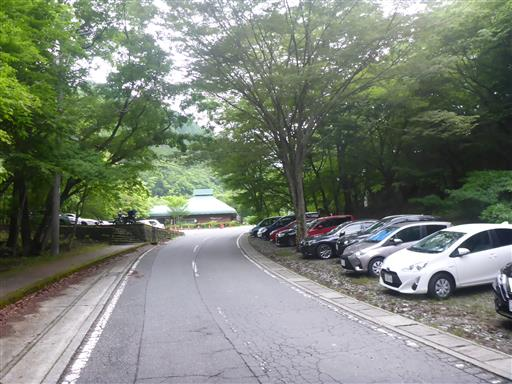
息子は川で遊びたそうにしている。帰りに川に寄ることを約束して山に向かう。
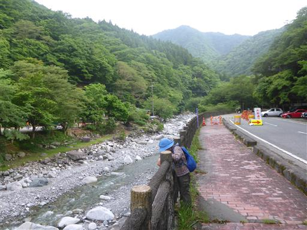
西丹沢ビジターセンター前にいる鹿はマスクをしている。
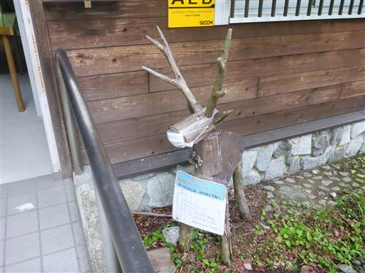
吊橋を渡って登山開始。
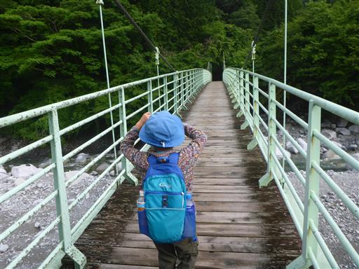
キャンプ場も賑わっている。
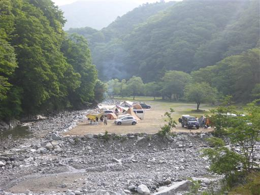
山の中に入って行く。
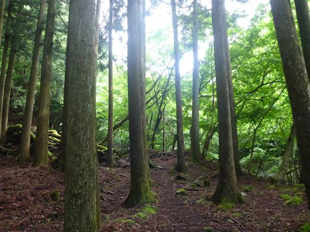
大きな堰堤を何度か超える。堰堤横の階段は段差が大きくて登りにくい。
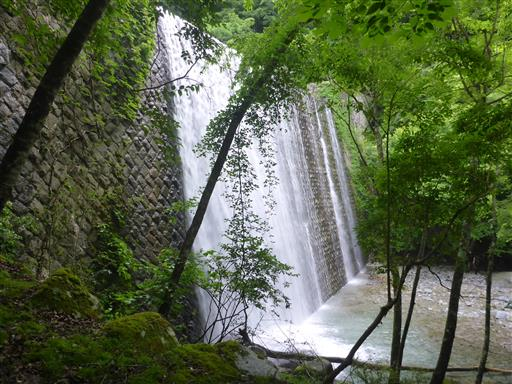
堰堤を越えると美しい白い河原が現れる。
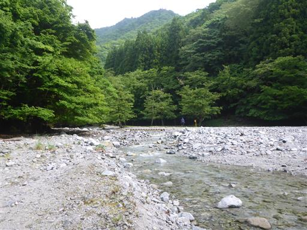
子供達は橋を見つけて早速渡っている。
こういう場所はテンションが上がるようだ。
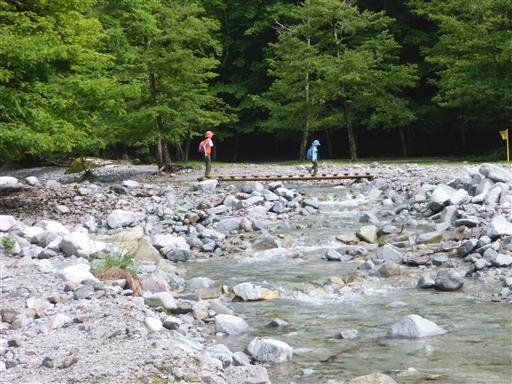
橋で何度も沢を渡る。
この辺りは昨年の台風19号で大きなダメージを受けたが、
有難いことに登山道はきれいに修復されている。
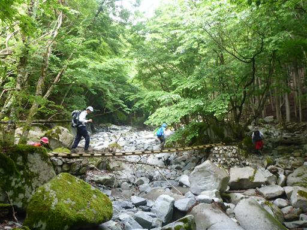
沢の中を歩く場所も結構ある。
一箇所沢を渡渉する場所があり、息子の手を繋いでサポートしたのだが
最後の一歩を強引に行こうとして沢の中で転倒。
膝から下が濡れてしまい、太腿と肘を石で打ったようで泣き始める。

怪我はしてなさそうだったので、何とかなだめて再出発。
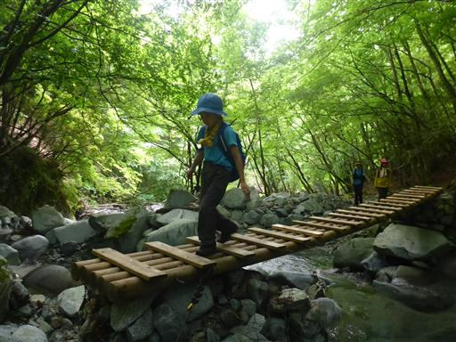
ちょっとした岩場。鎖に頼らず登る。
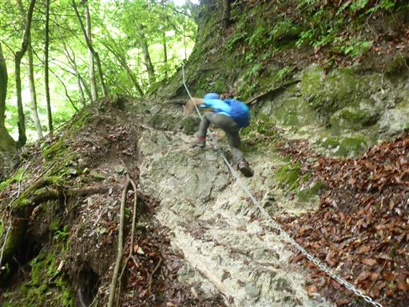
登山道の周囲に広がる苔。苔に混ざって小さな葉も一面に広がっている。
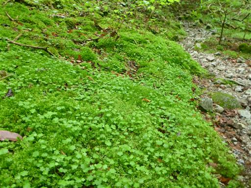
登山道から分岐して下棚の滝に寄り道。
とても立派な滝で間近で眺められる。
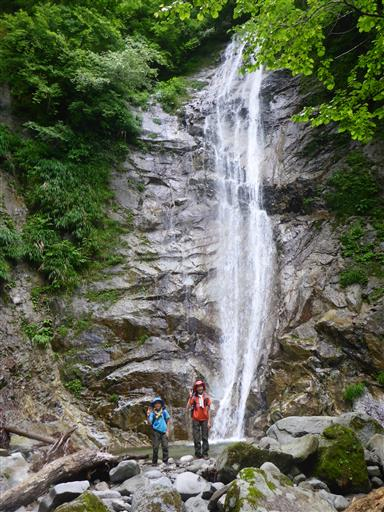
流失した橋と新しく架けられた橋。
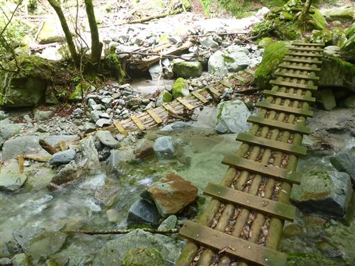
続いて本棚の滝に寄り道。丹沢三滝に数えられる立派な滝だ。
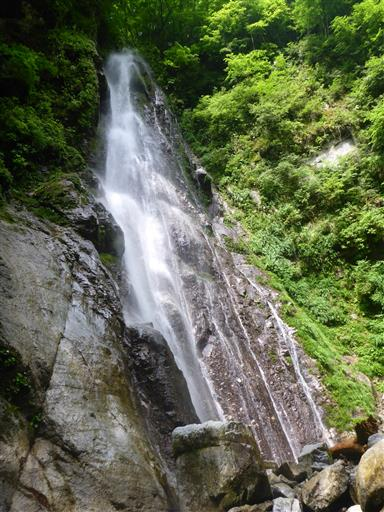
この滝は滝壺がほとんどなく、真下に行くことができる。
水しぶきが涼しい。

2つの滝を見学したら先に進む。
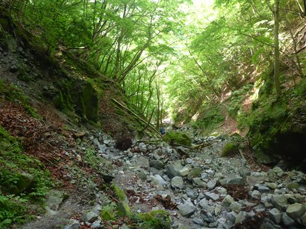
フジの花のトンネル。
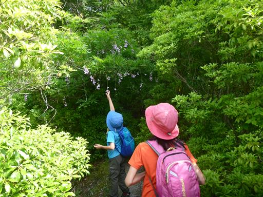
触角が特徴的な虫を発見。
帰って調べたところ、恐らくヒゲナガハナノミという名の虫だ。
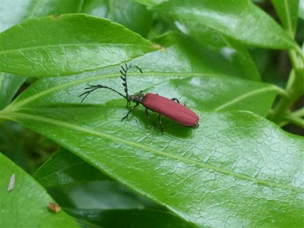
登山道は沢を離れる。
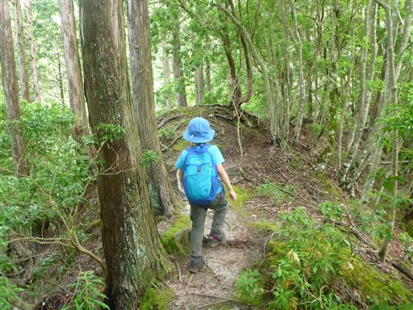
地形は急峻で片側が崖になっていることが多いので気が抜けない。
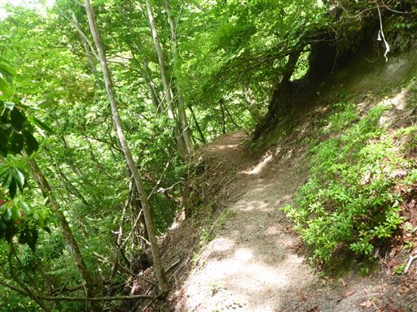
僅かにヤマツツジが咲き残っている。
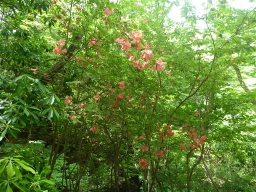
危なっかしい木の階段。
下が崩壊しているので砂の斜面に足跡が多い。
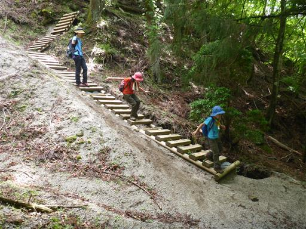
善六ノタワに到着。ここも痩せ尾根で危ない場所だ。
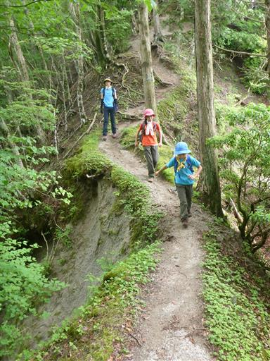
ここからはゆったりとした尾根道。ブナの木が多い。
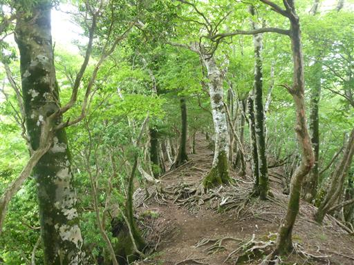
カエルを発見。
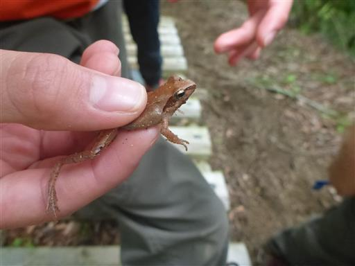
ギンリョウソウだろうか？頭しか出ていないのでよく分からない。
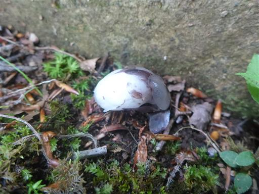
ツチグリを発見。皆が触ったからか、もうペコペコだ。
残念ながら触っても胞子は出てこない。
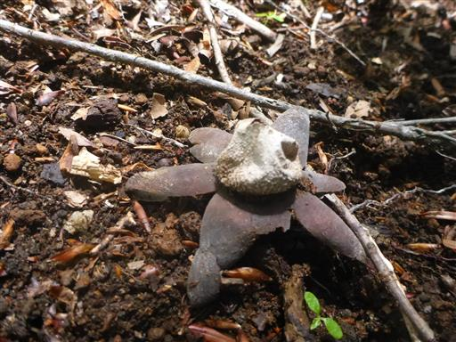
畦ヶ丸山頂に到着。標高1293m。
久々のロングコースでかなり疲れてしまった。
山頂からの展望は無い。昼食をとって休憩したら下山を開始する。
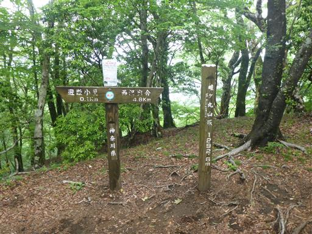
下山途中、一箇所から少しだけ展望が広がる。
息子はせっかく持ってきた双眼鏡をここで使う。

広い河原まで下りてきたら、河原で休憩を兼ねて少し遊ぶ。
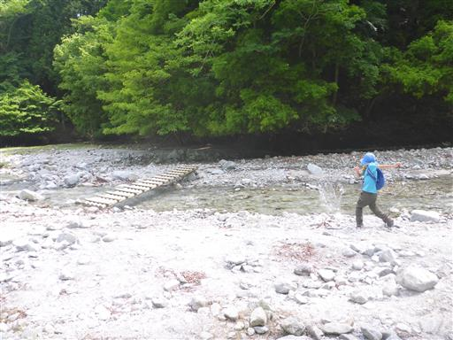
ここからは美しい景色が広がる。
堰堤が無ければどんな景色が広がっていたのか想像もつかない。
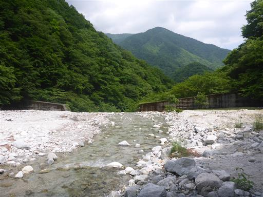
無事下山。
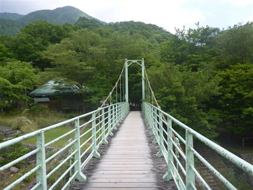
最後に中川川本流で川遊び。
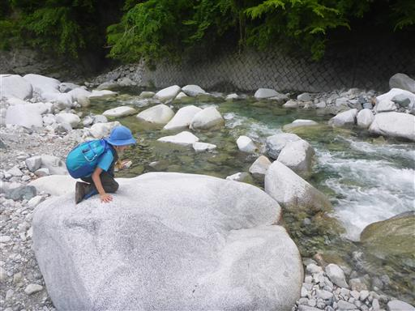
水は透き通っていて美しい。以前中川川で川遊びしたことを思い出す。
水は冷たく泳ぐのはまだ厳しそうだ。
畦ヶ丸は沢沿いの道が心地よく、滝は見事だった。
決して大変な山ではないのだが、息子はかなり疲れたようだ。
少しずつ体力をつけて行って、檜洞丸にも挑戦してみたい。
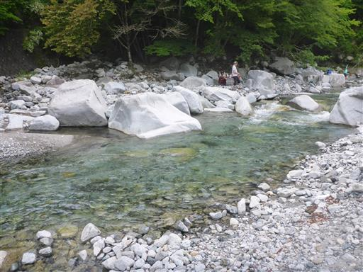